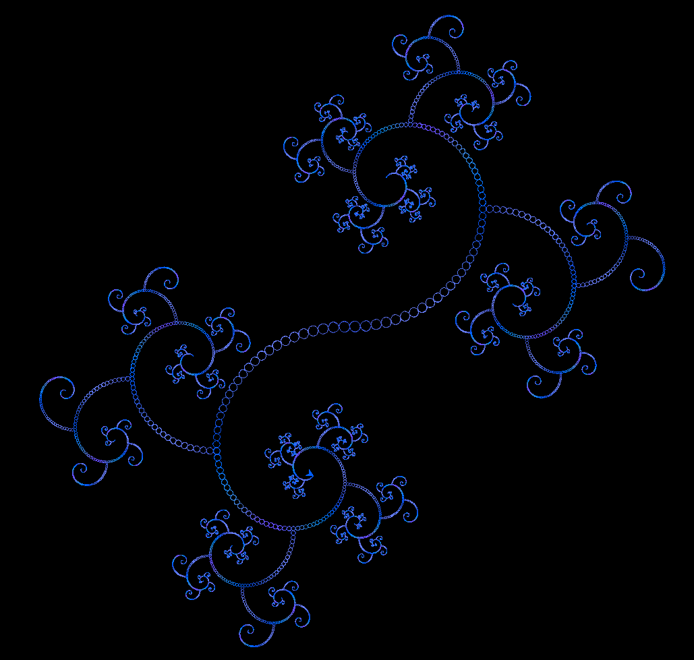
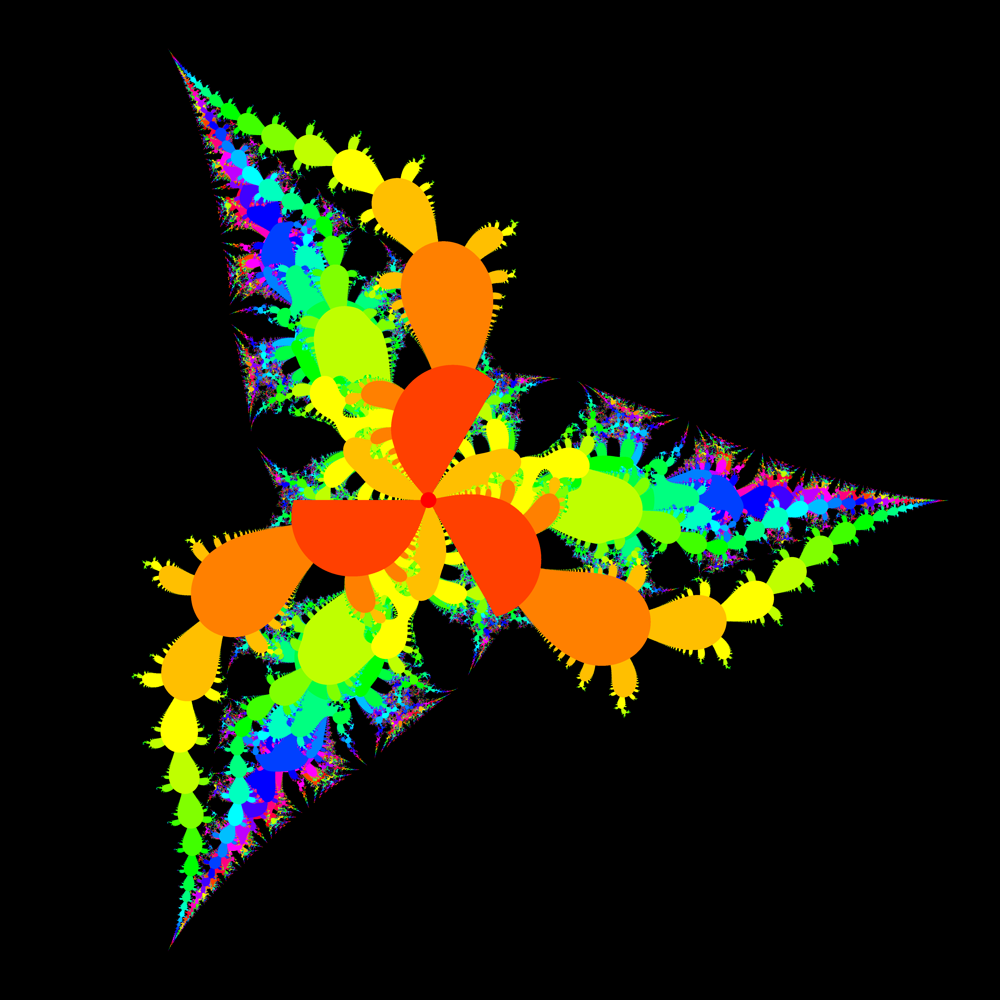
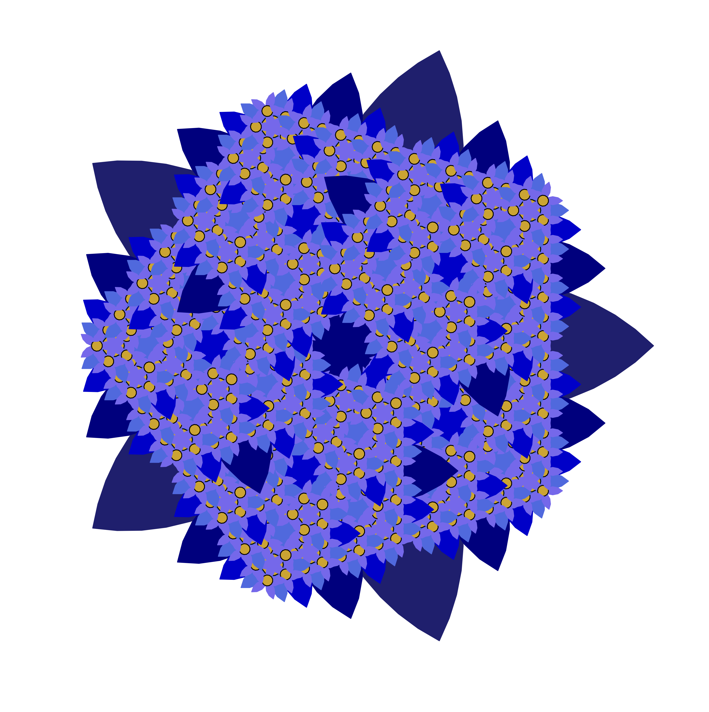
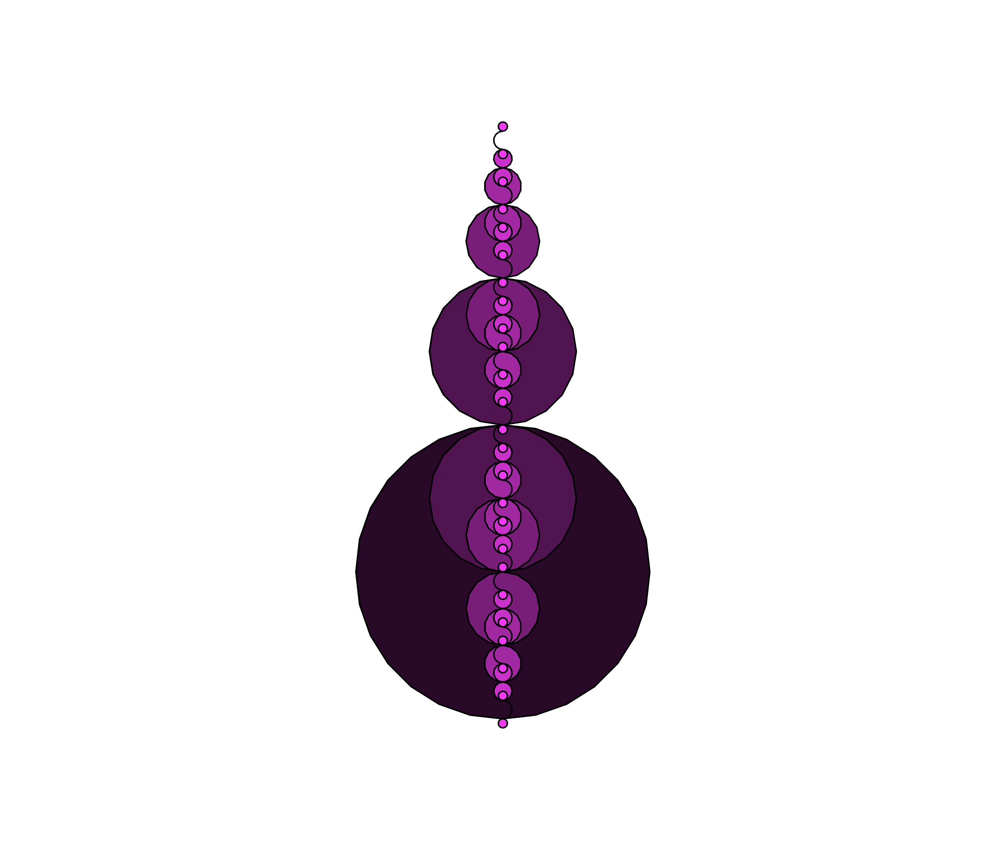

Resultats
El jurat format pels professors Pere Brunet i Sebastià Xambó i el Dr. Xavier Suau ha emès el seu veredicte sobre el concurs de fractals.
Categoria "Primer Curs"
L'obra guanyadora és MIR, creada per l'Abel Donate. El planteig i el codi són transparents. En la fractal s'observen clarament els trets auto-similars i a més té una bona qualitat estètica, amb una composició compensada i un subtil degradat cromàtic. També destaquem l'agradable experiència d'observar la progressió del dibuix.
Categoria "Cursos Superiors"
L'obra guanyadora és VPostulat, creada per l'Oriol Baeza. El resultat és visualment atractiu i el procès de generació, que es basa en el dibuix dels punts d'un conjunt de Mandelbrot, està ben presentat i resolt. Els colors han estat ben escollits i combinats, amb l'afegit que tenen un significat matemàtic alhora que estètic.
Addicionalment, els professors Jordi Cortadella i Jordi Petit, coordinadors de les assignatures d'Informàtica (GM) i Algorísmia i Programació 1 (GCED), han volgut atorgar un premi a les obres amb millor estil de programació que han aconseguit generar una fractal atractiva amb un codi senzill i ben estructurat.
Categoria "Zen" al Grau en Ciència i Enginyeria de Dades
L'obra guanyadora és Dan K. Memes, creada per en Marc Franquesa. El codi està ben estructurat, dissenyat i comentat. Amb un codi senzill i elegant ha aconseguit una visualització floral estèticament atractiva i fàcilment parametritzable.
Categoria "Zen" al Grau en Matemàtiques
L'obra guanyadora és Barret de Palla, creada per en Josep Sans. Un codi amb molt poques línies, ús exclusiu de cercles i geometria senzilla. Ha aconseguit un resultat visualment agradable jugant amb les tonalitats d'un color base.
Els membres del jurat voldríem agrair a tots els participants la feina ben feta i el seu treball imaginatiu, cosa que ha donat com a resultat unes fractals certament artístiques. No ha estat fàcil fer la tria i prioritzar entre totes les propostes.